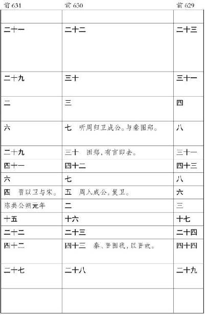

史记卷六
秦始皇本纪第六
秦始皇帝
者，秦庄襄王
子也。庄襄王
为秦
质子于赵
，见吕不韦
姬，悦而取之，生始皇
。以秦昭王
四十八年正月生于邯郸
。及生，名为政
，姓赵氏
。年十三岁，庄襄王
死，政
代立为秦王
。当是之时，秦
地已并巴
、蜀
、汉中
，越宛
有郢
，置南郡
矣；北收上郡
以东，有河东
、太原
、上党郡
；东至荥阳
，灭二周
，置三川郡
。吕不韦
为相，封十万户，号曰文信侯
。招致宾客游士，欲以并天下。李斯
为舍人。蒙骜
、王 、麃公
等为将军。王年少，初即位，委国事大臣。
、麃公
等为将军。王年少，初即位，委国事大臣。
晋阳
反，元年，将军蒙骜
击定之。二年，麃公
将卒攻卷
，斩首三万。三年，蒙骜
攻韩
，取十三城。王
死。十月，将军蒙骜
攻魏氏

、有诡
。岁大饥。四年，拔
、有诡
。三月，军罢。秦
质子归自赵
，赵
太子出归国。十月庚寅，蝗虫从东方来，蔽天。天下疫。百姓内粟千石，拜爵一级。五年，将军骜
攻魏
，定酸枣
、燕
、虚
、长平
、雍丘
、山阳城
，皆拔之，取二十城。初置东郡
。冬雷。六年，韩
、魏
、赵
、卫
、楚
共击秦
，取寿陵
。秦
出兵，五国兵罢。拔卫
，迫东郡
，其君角
率其支属徙居野王
，阻其山以保魏
之河内
。七年，彗星先出东方，见北方，五月见西方。将军骜
死。以攻龙
、孤
、庆都
，还兵攻汲
。彗星复见西方十六日。夏太后
死。八年，王弟长安君成
 将军击赵
，反，死屯留
，军吏皆斩死，迁其民于临洮
。将军壁死，卒屯留
、蒲
反，戮其尸。河
鱼大上，轻车重马东就食。
将军击赵
，反，死屯留
，军吏皆斩死，迁其民于临洮
。将军壁死，卒屯留
、蒲
反，戮其尸。河
鱼大上，轻车重马东就食。
嫪毐
封为长信侯
。予之山阳
地，令毐
居之。宫室车马衣服苑囿驰猎恣毐
。事无小大皆决于毐
。又以河西太原郡
更为毐国
。九年，彗星见，或竟天。攻魏垣
、蒲阳
。四月，上宿雍
。己酉，王冠，带剑。长信侯毐
作乱而觉，矫王御玺及太后玺以发县卒及卫卒、官骑、戎翟
君公、舍人，将欲攻蕲年宫
为乱。王知之，令相国昌平君
、昌文君
发卒攻毐。战咸阳
，斩首数百，皆拜爵，及宦者皆在战中，亦拜爵一级。毐
等败走。即令国中：有生得毐
，赐钱百万；杀之，五十万。尽得毐
等。卫尉竭
、内史肆
、佐弋竭
、中大夫令
齐
等二十人皆枭首。车裂以徇，灭其宗。及其舍人，轻者为鬼薪。及夺爵迁蜀
四千馀家，家房陵
。是月寒冻，有死者。杨端和
攻衍氏
。彗星见西方，又见北方，从斗
以南八十日。十年，相国吕不韦
坐嫪毐
免。桓
为将军。齐
、赵
来置酒。齐
人茅焦
说秦王
曰：“秦
方以天下为事，而大王有迁母太后之名，恐诸侯闻之，由此倍秦
也。”秦王
乃迎太后于雍
而入咸阳
，复居甘泉宫
。
大索，逐客。李斯 上书说，乃止逐客令。李斯 因说秦王 ，请先取韩 以恐他国，于是使斯 下韩 。韩王 患之，与韩非 谋弱秦 。大梁 人尉缭 来，说秦王 曰：“以秦 之强，诸侯譬如郡县之君，臣但恐诸侯合从，翕而出不意，此乃智伯 、夫差 、湣王 之所以亡也。愿大王毋爱财物，赂其豪臣，以乱其谋，不过亡三十万金，则诸侯可尽。”秦王 从其计，见尉缭 亢礼，衣服食饮与缭 同。缭 曰：“秦王 为人，蜂准，长目，挚鸟膺，豺声，少恩而虎狼心，居约易出人下，得志亦轻食人。我布衣，然见我常身自下我。诚使秦王 得志于天下，天下皆为虏矣。不可与久游。”乃亡去。秦王 觉，固止，以为秦 国尉，卒用其计策。而李斯 用事。
十一年，王翦
、桓
、杨端和
攻邺
，取九城。王翦
攻阏与
、橑杨
，皆并为一军。翦
将十八日，军归斗食以下，什推二人从军。取邺安阳
，桓
将。十二年，文信侯不韦
死，窃葬。其舍人临者，晋
人也逐出之；秦
人六百石以上夺爵，迁；五百石以下不临，迁，勿夺爵。自今以来，操国事不道如嫪毐
、不韦
者籍其门，视此。秋，复嫪毐
舍人迁蜀
者。当是之时，天下大旱，六月至八月乃雨。
十三年，桓
攻赵平阳
，杀赵
将扈辄
，斩首十万。王之河南
。正月，彗星见东方。十月，桓
攻赵
。十四年，攻赵
军于平阳
，取宜安
，破之，杀其将军。桓
定平阳
、武城
。韩非
使秦
，秦
用李斯
谋，留非
，非
死云阳
。韩王
请为臣。
十五年，大兴兵，一军至邺 ，一军至太原 ，取狼孟 。地动。十六年九月，发卒受地韩南阳 假守腾 。初令男子书年。魏 献地于秦 。秦 置丽邑 。十七年，内史腾 攻韩 ，得韩王安 ，尽纳其地，以其地为郡，命曰颍川 。地动。华阳太后 卒。民大饥。
十八年，大兴兵攻赵 ，王翦 将上地 ，下井陉 ，端和 将河内 ，羌瘣 伐赵 ，端和 围邯郸城 。十九年，王翦 、羌瘣 尽定取赵 地东阳 ，得赵王 。引兵欲攻燕 ，屯中山 。秦王 之邯郸 ，诸尝与王生赵 时母家有仇怨，皆坑之。秦王 还，从太原 、上郡 归。始皇帝 母太后崩。赵公子嘉 率其宗数百人之代 ，自立为代 王 ，东与燕 合兵，军上谷 。大饥。
二十年，燕太子丹 患秦 兵至国，恐，使荆轲 刺秦王 。秦王 觉之，体解轲 以徇，而使王翦 、辛胜 攻燕 。燕 、代 发兵击秦 军，秦 军破燕易水 之西。二十一年，王贲 攻荆 。乃益发卒诣王翦 军，遂破燕太子 军，取燕蓟城 ，得太子丹 之首。燕王 东收辽东 而王之。王翦 谢病老归。新郑 反。昌平君 徙于郢 。大雨雪，深二尺五寸。
二十二年，王贲 攻魏 ，引河 沟灌大梁 ，大梁 城坏，其王请降，尽取其地。
二十三年，秦王 复召王翦 ，强起之，使将击荆 。取陈 以南至平舆 ，虏荆王 。秦王 游至郢陈 。荆 将项燕 立昌平君 为荆王 ，反秦 于淮 南。二十四年，王翦 、蒙武 攻荆 ，破荆 军，昌平君 死，项燕 遂自杀。
二十五年，大兴兵，使王贲 将，攻燕辽东 ，得燕王喜 。还攻代 ，虏代王嘉 。王翦 遂定荆江南 地；降越君 ，置会稽郡 。五月，天下大酺。
二十六年，齐王建 与其相后胜 发兵守其西界，不通秦 。秦 使将军王贲 从燕 南攻齐 ，得齐王建 。
秦 初并天下，令丞相、御史曰：“异日韩王 纳地效玺，请为藩臣，已而倍约，与赵 、魏 合从畔秦 ，故兴兵诛之，虏其王。寡人以为善，庶几息兵革。赵王 使其相李牧 来约盟，故归其质子。已而倍盟，反我太原 ，故兴兵诛之，得其王。赵公子嘉 乃自立为代王 ，故举兵击灭之。魏王 始约服入秦 ，已而与韩 、赵 谋袭秦 ，秦 兵吏诛，遂破之。荆王 献青阳 以西，已而畔约，击我南郡 ，故发兵诛，得其王，遂定其荆 地。燕王 昏乱，其太子丹 乃阴令荆轲 为贼，兵吏诛，灭其国。齐王 用后胜 计，绝秦 使，欲为乱，兵吏诛，虏其王，平齐 地。寡人以眇眇之身，兴兵诛暴乱，赖宗庙之灵，六王咸伏其辜，天下大定。今名号不更，无以称成功，传后世。其议帝号。”丞相绾 、御史大夫劫 、廷尉斯 等皆曰：“昔者五帝 地方千里，其外侯服夷服，诸侯或朝或否，天子不能制。今陛下兴义兵，诛残贼，平定天下，海内为郡县，法令由一统，自上古以来未尝有，五帝 所不及。臣等谨与博士议曰：‘古有天皇 ，有地皇 ，有泰皇 ，泰皇 最贵。’臣等昧死上尊号，王为‘泰皇’。命为‘制’，令为‘诏’，天子自称曰‘朕’。”王曰：“去‘泰’，著‘皇’，采上古‘帝’位号，号曰‘皇帝’。他如议。”制曰：“可。”追尊庄襄王 为太上皇。制曰：“朕闻太古有号毋谥，中古有号，死而以行为谥。如此，则子议父，臣议君也，甚无谓，朕弗取焉。自今已来，除谥法。朕为始皇帝。后世以计数，二世三世至于万世，传之无穷。”
始皇 推终始五德之传，以为周 得火德，秦 代周 德，从所不胜。方今水 德之始，改年始，朝贺皆自十月朔。衣服旄旌节旗皆上黑。数以六为纪，符、法冠皆六寸，而舆六尺，六尺为步，乘六马。更名河 曰德水 ，以为水德之始。刚毅戾深，事皆决于法，刻削毋仁恩和义，然后合五德之数。于是急法，久者不赦。
丞相绾 等言：“诸侯初破，燕 、齐 、荆 地远，不为置王，毋以填之。请立诸子，唯上幸许。”始皇 下其议于群臣，群臣皆以为便。廷尉李斯 议曰：“周文武 所封子弟同姓甚众，然后属疏远，相攻击如仇雠，诸侯更相诛伐，周 天子弗能禁止。今海内赖陛下神灵一统，皆为郡县，诸子功臣以公赋税重赏赐之，甚足易制。天下无异意，则安宁之术也。置诸侯不便。”始皇 曰：“天下共苦战斗不休，以有侯王。赖宗庙，天下初定，又复立国，是树兵也，而求其宁息，岂不难哉！廷尉议是。”
分天下以为三十六郡，郡置守、尉、监。更名民曰“黔首”。大酺。收天下兵，聚之咸阳
，销以为钟 ，金人十二，重各千石，置廷宫中。一法度衡石丈尺。车同轨。书同文字。地东至海暨朝鲜
，西至临洮
、羌中
，南至北向户，北据河
为塞，并阴山
至辽东
。徙天下豪富于咸阳
十二万户。诸庙及章台
、上林
皆在渭
南。秦
每破诸侯，写放其宫室，作之咸阳
北阪上，南临渭
，自雍门
以东至泾
、渭
，殿屋复道周阁相属。所得诸侯美人钟鼓，以充入之。
，金人十二，重各千石，置廷宫中。一法度衡石丈尺。车同轨。书同文字。地东至海暨朝鲜
，西至临洮
、羌中
，南至北向户，北据河
为塞，并阴山
至辽东
。徙天下豪富于咸阳
十二万户。诸庙及章台
、上林
皆在渭
南。秦
每破诸侯，写放其宫室，作之咸阳
北阪上，南临渭
，自雍门
以东至泾
、渭
，殿屋复道周阁相属。所得诸侯美人钟鼓，以充入之。
二十七年，始皇 巡陇西 、北地 ，出鸡头山 ，过回中 。焉作信宫渭 南，已更命信宫 为极庙 ，象天极 。自极庙 道通郦山 ，作甘泉 前殿。筑甬道，自咸阳 属之。是岁，赐爵一级。治驰道。
二十八年，始皇 东行郡县，上邹峄山 。立石，与鲁 诸儒生议，刻石颂秦 德，议封禅望祭山川之事。乃遂上泰山 ，立石，封，祠祀。下，风雨暴至，休于树下，因封其树为五大夫。禅梁父 。刻所立石，其辞曰：
皇帝临位，作制明法，臣下修饬。二十有六年，初并天下，罔不宾服。亲巡远方黎民，登兹泰山 ，周览东极。从臣思迹，本原事业，祗诵功德。治道运行，诸产得宜，皆有法式。大义休明，垂于后世，顺承勿革。皇帝躬圣，既平天下，不懈于治。夙兴夜寐，建设长利，专隆教诲。训经宣达，远近毕理，咸承圣志。贵贱分明，男女礼顺，慎遵职事。昭隔内外，靡不清净，施于后嗣。化及无穷，遵奉遗诏，永承重戒。
于是乃并勃海 以东，过黄 、腄 ，穷成山 ，登之罘 ，立石颂秦 德焉而去。
南登琅邪 ，大乐之，留三月。乃徙黔首三万户琅邪台 下，复十二岁。 作琅邪台 ，立石刻，颂秦 德，明得意。曰：
维二十八年，皇帝作始。端平法度，万物之纪。以明人事，合同父子。圣智仁义，显白道理。东抚东土，以省卒士。事已大毕，乃临于海。皇帝之功，勤劳本事。上农除末，黔首是富。普天之下，抟心揖志。器械一量，同书文字。日月所照，舟舆所载。皆终其命，莫不得意。应时动事，是维皇帝。匡饬异俗，陵水经地。忧恤黔首，朝夕不懈。除疑定法，咸知所辟。方伯分职，诸治经易。举错必当，莫不如画。皇帝之明，临察四方。尊卑贵贱，不逾次行。奸邪不容，皆务贞良。细大尽力，莫敢怠荒。远迩辟隐，专务肃庄。端直敦忠，事业有常。皇帝之德，存定四极。诛乱除害，兴利致福。节事以时，诸产繁殖。黔首安宁，不用兵革。六亲相保，终无寇贼。欢欣奉教，尽知法式。六合之内，皇帝之土。西涉流沙 ，南尽北户。东有东海 ，北过大夏 。人迹所至，无不臣者。功盖五帝 ，泽及牛马。莫不受德，各安其宇。
维秦王 兼有天下，立名为皇帝，乃抚东土，至于琅邪 。列侯武城侯王离 、列侯通武侯王贲 、伦侯建成侯赵亥 、伦侯昌武侯成 、伦侯武信侯冯毋择 、丞相隗林 、丞相王绾 、卿李斯 、卿王戊 、五大夫赵婴 、五大夫杨樛 从，与议于海上。曰：“古之帝者，地不过千里，诸侯各守其封域，或朝或否，相侵暴乱，残伐不止，犹刻金石，以自为纪。古之五帝三王 ，知教不同，法度不明，假威鬼神，以欺远方，实不称名，故不久长。其身未殁，诸侯倍叛，法令不行。今皇帝并一海内，以为郡县，天下和平。昭明宗庙，体道行德，尊号大成。群臣相与诵皇帝功德，刻于金石，以为表经。”
既已，齐 人徐巿 等上书，言海中有三神山，名曰蓬莱 、方丈 、瀛洲 ，仙人居之。请得斋戒，与童男女求之。于是遣徐巿 发童男女数千人，入海求仙人。
始皇 还，过彭城 ，斋戒祷祠，欲出周 鼎泗水 。使千人没水求之，弗得。乃西南渡淮水 ，之衡山 、南郡 。浮江 ，至湘山 祠。逢大风，几不得渡。上问博士曰：“湘君 何神？”博士对曰：“闻之，尧 女，舜 之妻，而葬此。”于是始皇 大怒，使刑徒三千人皆伐湘山 树，赭其山。上自南郡 由武关 归。
二十九年，始皇 东游。至阳武博狼沙 中，为盗所惊。求弗得，乃令天下大索十日。
登之罘 ，刻石。其辞曰：
维二十九年，时在中春，阳和方起。皇帝东游，巡登之罘
，临照于海。从臣嘉观，原念休烈，追诵本始。大圣作治，建定法度，显箸纲纪。外教诸侯，光施文惠，明以义理。六国回辟，贪戾无厌，虐杀不已。皇帝哀众，遂发讨师，奋扬武德。义诛信行，威 旁达，莫不宾服。烹灭强暴，振救黔首，周定四极。普施明法，经纬天下，永为仪则。大矣哉！宇县之中，承顺圣意。群臣诵功，请刻于石，表垂于常式。
旁达，莫不宾服。烹灭强暴，振救黔首，周定四极。普施明法，经纬天下，永为仪则。大矣哉！宇县之中，承顺圣意。群臣诵功，请刻于石，表垂于常式。
其东观曰：
维二十九年，皇帝春游，览省远方。逮于海隅，遂登之罘 ，昭临朝阳。观望广丽，从臣咸念，原道至明。圣法初兴，清理疆内，外诛暴强。武威旁畅，振动四极，禽灭六王。阐并天下，甾害绝息，永偃戎兵。皇帝明德，经理宇内，视听不怠。作立大义，昭设备器，咸有章旗。职臣遵分，各知所行，事无嫌疑。黔首改化，远迩同度，临古绝尤。常职既定，后嗣循业，长承圣治。群臣嘉德，祗诵圣烈，请刻之罘 。
旋，遂之琅邪 ，道上党 入。
三十年，无事。
三十一年十二月，更名腊曰“嘉平”。赐黔首里六石米，二羊。始皇 为微行咸阳 ，与武士四人俱，夜出逢盗兰池 ，见窘，武士击杀盗，关中 大索二十日。米石千六百。
三十二年，始皇 之碣石 ，使燕 人卢生 求羡门 、高誓 。刻碣石 门。坏城郭，决通堤防。其辞曰：
遂兴师旅，诛戮无道，为逆灭息。武殄暴逆，文复无罪，庶心咸服。惠论功劳，赏及牛马，恩肥土域。皇帝奋威，德并诸侯，初一泰平。堕坏城郭，决通川防，夷去险阻。地势既定，黎庶无繇，天下咸抚。男乐其畴，女修其业，事各有序。惠被诸产，久并来田，莫不安所。群臣诵烈，请刻此石，垂著仪矩。
因使韩终 、侯公 、石生 求仙人不死之药。始皇 巡北边，从上郡 入。燕 人卢生 使入海还，以鬼神事，因奏录图书，曰“亡秦 者胡 也”。始皇 乃使将军蒙恬 发兵三十万人北击胡 ，略取河南 地。
三十三年，发诸尝逋亡人、赘婿、贾人略取陆梁 地，为桂林 、象郡 、南海 ，以適遣戍。西北斥逐匈奴 。自榆中 并河以东，属之阴山 ，以为四十四县，城河 上为塞。又使蒙恬 渡河 取高阙 、阳山 、北假 中，筑亭障以逐戎 人。 徙谪，实之初县。禁不得祠。明星出西方。三十四年，適治狱吏不直者，筑长城 及南越 地。
始皇 置酒咸阳宫 ，博士七十人前为寿。仆射周青臣 进颂曰：“他时秦 地不过千里，赖陛下神灵明圣，平定海内，放逐蛮夷，日月所照，莫不宾服。以诸侯为郡县，人人自安乐，无战争之患，传之万世。自上古不及陛下威德。”始皇 悦。博士齐 人淳于越 进曰：“臣闻殷周 之王千馀岁，封子弟功臣，自为枝辅。今陛下有海内，而子弟为匹夫，卒有田常 、六卿之臣，无辅拂，何以相救哉？事不师古而能长久者，非所闻也。今青臣 又面谀以重陛下之过，非忠臣。”始皇 下其议。丞相李斯 曰：“五帝 不相复，三代 不相袭，各以治，非其相反，时变异也。今陛下创大业，建万世之功，固非愚儒所知。且越 言乃三代 之事，何足法也？异时诸侯并争，厚招游学。今天下已定，法令出一，百姓当家则力农工，士则学习法令辟禁。今诸生不师今而学古，以非当世，惑乱黔首。丞相臣斯 昧死言：古者天下散乱，莫之能一，是以诸侯并作，语皆道古以害今，饰虚言以乱实，人善其所私学，以非上之所建立。今皇帝并有天下，别黑白而定一尊。私学而相与非法教，人闻令下，则各以其学议之，入则心非，出则巷议，夸主以为名，异取以为高，率群下以造谤。如此弗禁，则主势降乎上，党与成乎下。禁之便。臣请史官非秦 记皆烧之。非博士官所职，天下敢有藏诗 、书 、百家语者，悉诣守、尉杂烧之。有敢偶语诗书 者弃市。以古非今者族。吏见知不举者与同罪。令下三十日不烧，黥为城旦。所不去者，医药卜筮种树之书。若欲有学法令，以吏为师。”制曰：“可。”
三十五年，除道，道九原 抵云阳 ，堑山堙谷，直通之。于是始皇 以为咸阳 人多，先王之宫廷小，吾闻周文王 都丰 ，武王 都镐 ，丰镐 之间，帝王之都也。乃营作朝宫渭 南上林苑 中。先作前殿阿房 ，东西五百步，南北五十丈，上可以坐万人，下可以建五丈旗。周驰为阁道，自殿下直抵南山 。表南山 之颠以为阙。为复道，自阿房 渡渭 ，属之咸阳 ，以象天极阁道 绝汉 抵营室 也。阿房宫 未成；成，欲更择令名名之。作宫阿房，故天下谓之阿房宫 。隐宫徒刑者七十馀万人，乃分作阿房宫 ，或作丽山 。发北山 石椁，乃写蜀 、荆 地材皆至。关中 计宫三百，关外四百馀。于是立石东海 上朐 界中，以为秦 东门。因徙三万家丽邑 ，五万家云阳 ，皆复不事十岁。
卢生 说始皇 曰：“臣等求芝奇药仙者常弗遇，类物有害之者。方中，人主时为微行以辟恶鬼，恶鬼辟，真人至。人主所居而人臣知之，则害于神。真人者，入水不濡，入火不爇，陵云气，与天地久长。今上治天下，未能恬 倓。愿上所居宫毋令人知，然后不死之药殆可得也。”于是始皇 曰：“吾慕真人，自谓‘真人’，不称‘朕’。”乃令咸阳 之旁二百里内宫观二百七十复道甬道相连，帷帐钟鼓美人充之，各案署不移徙。行所幸，有言其处者，罪死。始皇帝 幸梁山宫 ，从山上见丞相车骑众，弗善也。中人或告丞相，丞相后损车骑。始皇 怒曰：“此中人泄吾语。”案问莫服。当是时，诏捕诸时在旁者，皆杀之。自是后莫知行之所在。听事，群臣受决事，悉于咸阳宫 。
侯生 、卢生 相与谋曰：“始皇 为人，天性刚戾自用，起诸侯，并天下，意得欲从，以为自古莫及己。专任狱吏，狱吏得亲幸。博士虽七十人，特备员弗用。丞相诸大臣皆受成事，倚辨于上。上乐以刑杀为威，天下畏罪持禄，莫敢尽忠。上不闻过而日骄，下慑伏谩欺以取容。秦 法，不得兼方，不验，辄死。然候星气者至三百人，皆良士，畏忌讳谀，不敢端言其过。天下之事无小大皆决于上，上至以衡石量书，日夜有呈，不中呈不得休息。贪于权势至如此，未可为求仙药。”于是乃亡去。始皇 闻亡，乃大怒曰：“吾前收天下书不中用者尽去之。悉召文学方术士甚众，欲以兴太平，方士欲练以求奇药。今闻韩众 去不报，徐巿 等费以巨万计，终不得药，徒奸利相告日闻。卢生 等吾尊赐之甚厚，今乃诽谤我，以重吾不德也。诸生在咸阳 者，吾使人廉问，或为妖言以乱黔首。”于是使御史悉案问诸生，诸生传相告引，乃自除。犯禁者四百六十馀人，皆坑之咸阳 ，使天下知之，以惩后。益发谪徙边。始皇 长子扶苏 谏曰：“天下初定，远方黔首未集，诸生皆诵法孔子 ，今上皆重法绳之，臣恐天下不安。唯上察之。”始皇 怒，使扶苏 北监蒙恬 于上郡 。
三十六年，荧惑 守心 。有坠星下东郡 ，至地为石，黔首或刻其石曰“始皇帝 死而地分”。始皇 闻之，遣御史逐问，莫服，尽取石旁居人诛之，因燔销其石。始皇 不乐，使博士为仙真人诗 ，及行所游天下，传令乐人歌弦之。秋，使者从关东 夜过华阴平舒 道，有人持璧遮使者曰：“为吾遗滈池君 。”因言曰：“今年祖龙死。”使者问其故，因忽不见，置其璧去。使者奉璧具以闻。始皇 默然良久，曰：“山鬼固不过知一岁事也。”退言曰：“祖龙者，人之先也。”使御府视璧，乃二十八年行渡江 所沉璧也。于是始皇 卜之，卦得游徙吉。迁北河榆中 三万家。拜爵一级。
三十七年十月癸丑，始皇 出游。左丞相斯 从，右丞相去疾 守。少子胡亥 爱慕请从，上许之。十一月，行至云梦 ，望祀虞舜 于九疑山 。浮江 下，观籍柯，渡海渚。过丹阳 ，至钱唐 。临浙江 ，水波恶，乃西百二十里从狭中渡。上会稽 ，祭大禹 ，望于南海 ，而立石刻颂秦 德，其文曰：
皇帝休烈，平一宇内，德惠修长。三十有七年，亲巡天下，周览远方。遂登会稽 ，宣省习俗，黔首斋庄。群臣诵功，本原事迹，追首高明。秦 圣临国，始定刑名，显陈旧章。初平法式，审别职任，以立恒常。六王专倍，贪戾慠猛，率众自强。暴虐恣行，负力而骄，数动甲兵。阴通间使，以事合从，行为辟方。内饰诈谋，外来侵边，遂起祸殃。义威诛之，殄熄暴悖，乱贼灭亡。圣德广密，六合之中，被泽无疆。皇帝并宇，兼听万事，远近毕清。运理群物，考验事实，各载其名。贵贱并通，善否陈前，靡有隐情。饰省宣义，有子而嫁，倍死不贞。防隔内外，禁止淫泆，男女絜诚。夫为寄豭，杀之无罪，男秉义程。妻为逃嫁，子不得母，咸化廉清。大治濯俗，天下承风，蒙被休经。皆遵度轨，和安敦勉，莫不顺令。黔首修絜，人乐同则，嘉保太平。后敬奉法，常治无极，舆舟不倾。从臣诵烈，请刻此石，光垂休铭。
还过吴 ，从江乘 渡。并海上，北至琅邪 。方士徐巿 等入海求神药，数岁不得，费多，恐谴，乃诈曰：“蓬莱 药可得，然常为大鲛鱼所苦，故不得至，愿请善射与俱，见则以连弩射之。”始皇 梦与海神战，如人状。问占梦，博士曰：“水神不可见，以大鱼蛟龙为候。今上祷祠备谨，而有此恶神，当除去，而善神可致。”乃令入海者赍捕巨鱼具，而自以连弩候大鱼出射之。自琅邪 北至荣成山 ，弗见。至之罘 ，见巨鱼，射杀一鱼。遂并海西。
至平原津 而病。始皇 恶言死，群臣莫敢言死事。上病益甚，乃为玺书赐公子扶苏 曰：“与丧会咸阳 而葬。”书已封，在中车府令赵高 行符玺事所，未授使者。七月丙寅，始皇 崩于沙丘平台 。丞相斯 为上崩在外，恐诸公子及天下有变，乃秘之，不发丧。棺载辒凉车中，故幸宦者参乘，所至上食。百官奏事如故，宦者辄从辊凉车中可其奏事。独子胡亥 、赵高 及所幸宦者五六人知上死。赵高 故尝教胡亥 书及狱律令法事，胡亥 私幸之。高 乃与公子胡亥 、丞相斯 阴谋破去始皇 所封书赐公子扶苏 者，而更诈为丞相斯 受始皇 遗诏沙丘 ，立子胡亥 为太子。更为书赐公子扶苏 、蒙恬 ，数以罪，赐死。语具在李斯传 中。行，遂从井陉 抵九原 。会暑，上辒车臭，乃诏从官令车载一石鲍鱼，以乱其臭。
行从直道至咸阳 ，发丧。太子胡亥 袭位，为二世皇帝 。九月，葬始皇郦山 。始皇 初即位，穿治郦山 ，及并天下，天下徒送诣七十馀万人，穿三泉，下铜而致椁，宫观百官奇器珍怪徙臧满之。令匠作机弩矢，有所穿近者辄射之。以水银为百川江河大海，机相灌输，上具天文，下具地理。以 人鱼膏为烛，度不灭者久之。二世 曰：“先帝后宫非有子者，出焉不宜。”皆令从死，死者甚众。葬既已下，或言工匠为机，臧皆知之，臧重即泄。大事毕，已臧，闭中羡，下外羡门，尽闭工匠臧者，无复出者。树草木以象山。
二世皇帝 元年，年二十一。赵高 为郎中令，任用事。二世 下诏，增始皇 寝庙牺牲及山川百祀之礼。令群臣议尊始皇庙 。群臣皆顿首言曰：“古者天子七庙，诸侯五，大夫三，虽万世世不轶毁。今始皇 为极庙，四海之内皆献贡职，增牺牲，礼咸备，毋以加。先王庙或在西雍 ，或在咸阳 。天子仪当独奉酌祠始皇庙 。自襄公 已下轶毁。所置凡七庙。群臣以礼进祠，以尊始皇庙 为帝者祖庙。皇帝复自称‘朕’。”
二世 与赵高 谋曰：“朕年少，初即位，黔首未集附。先帝巡行郡县，以示强，威服海内。今晏然不巡行，即见弱，毋以臣畜天下。”春，二世 东行郡县，李斯 从。到碣石 ，并海，南至会稽 ，而尽刻始皇 所立刻石，石旁著大臣从者名，以章先帝成功盛德焉：
皇帝曰：“金石刻尽始皇帝 所为也。今袭号而金石刻辞不称始皇帝 ，其于久远也如后嗣为之者，不称成功盛德。”丞相臣斯 、臣去疾 、御史大夫臣德 昧死言：“臣请具刻诏书刻石，因明白矣。臣昧死请。”制曰：“可。”
遂至辽东 而还。
于是二世 乃遵用赵高 ，申法令。乃阴与赵高 谋曰：“大臣不服，官吏尚强，及诸公子必与我争，为之奈何？”高 曰：“臣固愿言而未敢也。先帝之大臣，皆天下累世名贵人也，积功劳世以相传久矣。今高 素小贱，陛下幸称举，令在上位，管中事。大臣鞅鞅，特以貌从臣，其心实不服。今上出，不因此时案郡县守尉有罪者诛之，上以振威天下，下以除去上生平所不可者。今时不师文而决于武力，愿陛下遂从时毋疑，即群臣不及谋。明主收举馀民，贱者贵之，贫者富之，远者近之，则上下集而国安矣。”二世 曰：“善。”乃行诛大臣及诸公子，以罪过连逮少近官三郎，无得立者，而六公子戮死于杜 。公子将闾 昆弟三人囚于内宫，议其罪独后。二世 使使令将闾 曰：“公子不臣，罪当死，吏致法焉。”将闾 曰：“阙廷之礼，吾未尝敢不从宾赞也；廊庙之位，吾未尝敢失节也；受命应对，吾未尝敢失辞也。何谓不臣？愿闻罪而死。”使者曰：“臣不得与谋，奉书从事。”将闾 乃仰天大呼天者三，曰：“天乎！吾无罪！”昆弟三人皆流涕拔剑自杀。宗室振恐。群臣谏者以为诽谤，大吏持禄取容，黔首振恐。
四月，二世 还至咸阳 ，曰：“先帝为咸阳 朝廷小，故营阿房宫 。为室堂 未就，会上崩，罢其作者，复土郦山 。郦山 事大毕，今释阿房宫 弗就，则是章先帝举事过也。”复作阿房宫 。外抚四夷，如始皇 计。尽征其材士五万人为屯卫咸阳 ，令教射狗马禽兽。当食者多，度不足，下调郡县转输菽粟刍藁，皆令自赍粮食，咸阳 三百里内不得食其谷。用法益刻深。
七月，戍卒陈胜 等反故荆 地，为“张楚”。胜 自立为楚王 ，居陈 ，遣诸将徇地。山东 郡县少年苦秦 吏，皆杀其守尉令丞反，以应陈涉 ，相立为侯王，合从西乡，名为伐秦 ，不可胜数也。谒者使东方来，以反者闻二世 。二世 怒，下吏。后使者至，上问，对曰：“群盗，郡守尉方逐捕，今尽得，不足忧。”上悦。武臣 自立为赵王 ，魏咎 为魏王 ，田儋 为齐王 。沛公 起沛 。项梁 举兵会稽郡 。
二年冬，陈涉 所遣周章 等将西至戏 ，兵数十万。二世 大惊，与群臣谋曰：“奈何？”少府章邯 曰：“盗已至，众强，今发近县不及矣。郦山 徒多，请赦之，授兵以击之。”二世 乃大赦天下，使章邯 将，击破周章 军而走，遂杀章曹阳 。二世 益遣长史司马欣 、董翳 佐章邯 击盗，杀陈胜城父 ，破项梁定陶 ，灭魏咎临济 。楚 地盗名将已死，章邯 乃北渡河 ，击赵王歇 等于钜鹿 。
赵高 说二世 曰：“先帝临制天下久，故群臣不敢为非，进邪说。今陛下富于春秋，初即位，奈何与公卿廷决事？事即有误，示群臣短也。天子称朕，固不闻声。”于是二世 常居禁中，与高 决诸事。其后公卿希得朝见，盗贼益多，而关中 卒发东击盗者毋已。右丞相去疾 、左丞相斯 、将军冯劫 进谏曰：“关东 群盗并起，秦 发兵诛击，所杀亡甚众，然犹不止。盗多，皆以戍漕转作事苦，赋税大也。请且止阿房宫 作者，减省四边戍转。”二世 曰：“吾闻之韩子 曰：‘尧舜 采椽不刮，茅茨不翦，饭土塯，啜土形，虽监门之养，不觳于此。禹 凿龙门 ，通大夏 ，决河 亭水，放之海，身自持筑臿，胫毋毛，臣虏之劳不烈于此矣。’凡所为贵有天下者，得肆意极欲，主重明法，下不敢为非，以制御海内矣。夫虞 、夏 之主，贵为天子，亲处穷苦之实，以徇百姓，尚何于法？朕尊万乘，毋其实，吾欲造千乘之驾，万乘之属，充吾号名。且先帝起诸侯，兼天下，天下已定，外攘四夷以安边竟，作宫室以章得意，而君观先帝功业有绪。今朕即位二年之间，群盗并起，君不能禁，又欲罢先帝之所为，是上毋以报先帝，次不为朕尽忠力，何以在位？”下去疾 、斯 、劫 吏，案责他罪。去疾 、劫 曰：“将相不辱。”自杀。斯 卒囚，就五刑。
三年，章邯 等将其卒围钜鹿 ，楚 上将军项羽 将楚 卒往救钜鹿 。冬，赵高 为丞相，竟案李斯 杀之。夏，章邯 等战数却，二世 使人让邯 ，邯 恐，使长史欣 请事。赵高 弗见，又弗信。欣 恐，亡去，高 使人捕追不及。欣 见邯 曰： “赵高 用事于中，将军有功亦诛，无功亦诛。”项羽 急击秦 军，虏王离 ，邯 等遂以兵降诸侯。八月己亥，赵高 欲为乱，恐群臣不听，乃先设验，持鹿献于二世 ，曰：“马也。”二世 笑曰：“丞相误邪？谓鹿为马。”问左右，左右或默，或言马以阿顺赵高 。或言鹿，高 因阴中诸言鹿者以法。后群臣皆畏高 。
高 前数言“关东 盗毋能为也”，及项羽 虏秦 将王离 等钜鹿 下而前，章邯 等军数却，上书请益助，燕 、赵 、齐 、楚 、韩 、魏 皆立为王，自关以东，大氐尽畔秦 吏应诸侯，诸侯咸率其众西向。沛公 将数万人已屠武关 ，使人私于高 ，高 恐二世 怒，诛及其身，乃谢病不朝见。二世 梦白虎啮其左骖马，杀之，心不乐，怪问占梦。卜曰：“泾水 为祟。”二世 乃斋于望夷宫 ，欲祠泾 ，沉四白马。使使责让高 以盗贼事。高 惧，乃阴与其婿咸阳 令阎乐 、其弟赵成 谋曰：“上不听谏，今事急，欲归祸于吾宗。吾欲易置上，更立公子婴 。子婴 仁俭，百姓皆载其言。”使郎中令为内应，诈为有大贼，令乐 召吏发卒，追劫乐 母置高 舍。遣乐 将吏卒千馀人至望夷宫 殿门，缚卫令仆射，曰：“贼入此，何不止？”卫令曰：“周庐设卒甚谨，安得贼敢入宫？”乐 遂斩卫令，直将吏入，行射，郎宦者大惊，或走或格，格者辄死，死者数十人。郎中令与乐 俱入，射上幄坐帏。二世 怒，召左右，左右皆惶扰不斗。旁有宦者一人，侍不敢去。二世 入内，谓曰：“公何不蚤告我？乃至于此！”宦者曰：“臣不敢言，故得全。使臣蚤言，皆已诛，安得至今？”阎乐 前即二世 数曰：“足下骄恣，诛杀无道，天下共畔足下，足下其自为计。”二世 曰：“丞相可得见否？”乐 曰：“不可。”二世 曰：“吾愿得一郡为王。”弗许。又曰：“愿为万户侯。”弗许。曰：“愿与妻子为黔首，比诸公子。”阎乐 曰：“臣受命于丞相，为天下诛足下，足下虽多言，臣不敢报。”麾其兵进。二世 自杀。
阎乐
归报赵高
，赵高
乃悉召诸大臣公子，告以诛二世
之状。曰：“秦
故王国，始皇
君天下，故称帝。今六国复自立，秦
地益小，乃以空名为帝，不可。宜为王如故，便。”立二世
之兄子公子婴
为秦王
。以黔首葬二世杜南宜春苑
中。令子婴
斋，当庙见，受王玺。斋五日，子婴
与其子二人谋曰：“丞相高
杀二世望夷宫
，恐群臣诛之，乃详以义立我。我闻赵高
乃与楚
约，灭秦
宗室而王关中
。今使我斋见庙，此欲因庙中杀我。我称病不行，丞相必自来，来则杀之。”高
使人请子婴
数辈，子婴
不行，高
果自往，曰：“宗庙重事，王奈何不行？”子婴
遂刺杀高
于斋宫，三族高
家以徇咸阳
。子婴
为秦王
四十六日，楚
将沛公
破秦
军入武关
，遂至霸上
，使人约降子婴
。子婴
即系颈以组，白马素车，奉天子玺符，降轵道
旁。沛公
遂入咸阳
，封宫室府库，还军霸上
。居月馀，诸侯兵至，项籍
为从长，杀子婴
及秦
诸公子宗族。遂
屠咸阳
，烧其宫室，虏其子女，收其珍宝货财，诸侯共分之。灭秦
之后，各分其地为三，名曰壅王
、塞王
、翟王
，号曰三秦
。项羽
为西楚霸王
，主命分天下王诸侯，秦
竟灭矣。后五年，天下定于汉
。
太史公 曰：“秦 之先伯翳 ，尝有勋于唐虞 之际，受土赐姓。及殷夏 之间微散。至周 之衰，秦 兴，邑于西垂。自缪公 以来，稍蚕食诸侯，竟成始皇 。始皇 自以为功过五帝 ，地广三王 ，而羞与之侔。善哉乎贾生 推言之也！曰：
秦
并兼诸侯山东
三十馀郡，缮津关，据险塞，修甲兵而守之。然陈涉
以戍卒散乱之众数百，奋臂大呼，不用弓戟之兵， 櫌白梃，望屋而食，横行天下。秦
人阻险不守，关梁不阖，长戟不刺，强弩不射。楚
师深入，战于鸿门
，曾无藩篱之艰。于是山东
大扰，诸侯并起，豪俊相立。秦
使章邯
将而东征，章邯
因以三军之众要市于外，以谋其上。群臣之不信，可见于此矣。子婴
立，遂不寤。藉使子婴
有庸主之材，仅得中佐，山东
虽乱，秦
之地可全而有，宗庙之祀未当绝也。
櫌白梃，望屋而食，横行天下。秦
人阻险不守，关梁不阖，长戟不刺，强弩不射。楚
师深入，战于鸿门
，曾无藩篱之艰。于是山东
大扰，诸侯并起，豪俊相立。秦
使章邯
将而东征，章邯
因以三军之众要市于外，以谋其上。群臣之不信，可见于此矣。子婴
立，遂不寤。藉使子婴
有庸主之材，仅得中佐，山东
虽乱，秦
之地可全而有，宗庙之祀未当绝也。
秦 地被山带河 以为固，四塞之国也。自缪公 以来，至于秦王 ，二十馀君，常为诸侯雄。岂世世贤哉？其势居然也。且天下尝同心并力而攻秦 矣。当此之世，贤智并列，良将行其师，贤相通其谋，然困于阻险而不能进，秦 乃延人战而为之开关，百万之徒逃北而遂坏。岂勇力智慧不足哉？形不利，势不便也。秦 小邑并大城，守险塞而军，高垒毋战，闭关据厄，荷戟而守之。诸侯起于匹夫，以利合，非有素王之行也。其交未亲，其下未附，名为亡秦 ，其实利之也。彼见秦 阻之难犯也，必退师。安土息民，以待其敝，收弱扶罢，以令大国之君，不患不得意于海内。贵为天子，富有天下，而身为禽者，其救败非也。
秦王 足己不问，遂过而不变。二世 受之，因而不改，暴虐以重祸。子婴 孤立无亲，危弱无辅。三主惑而终身不悟，亡，不亦宜乎？当此时也，世非无深虑知化之士也，然所以不敢尽忠拂过者，秦 俗多忌讳之禁，忠言未卒于口而身为戮没矣。故使天下之士，倾耳而听，重足而立，拑口而不言。是以三主失道，忠臣不敢谏，智士不敢谋，天下已乱，奸不上闻，岂不哀哉！先王知雍蔽之伤国也，故置公卿大夫士，以饰法设刑，而天下治。其强也，禁暴诛乱而天下服。其弱也，五伯征而诸侯从。其削也，内守外附而社稷存。故秦 之盛也，繁法严刑而天下振；及其衰也，百姓怨望而海内畔矣。故周 五序得其道，而千馀岁 不绝。秦 本末并失，故不长久。由此观之，安危之统相去远矣。野谚曰“前事之不忘，后事之师也”。是以君子为国，观之上古，验之当世，参以人事，察盛衰之理，审权势之宜，去就有序，变化有时，故旷日长久而社稷安矣。
秦孝公 据殽函 之固，拥雍州 之地，君臣固守而窥周室 ，有席卷天下，包举宇内，囊括四海之意，并吞八荒之心。当是时，商君 佐之，内立法度，务耕织，修守战之备，外连衡而斗诸侯，于是秦 人拱手而取西河 之外。
孝公 既没，惠王 、武王 蒙故业，因遗册，南兼汉中 ，西举巴 、蜀 ，东割膏腴之地，收要害之郡。诸侯恐惧，会盟而谋弱秦 ，不爱珍器重宝肥美之地，以致天下之士，合从缔交，相与为一。当是时，齐 有孟尝 ，赵 有平原 ，楚 有春申 ，魏 有信陵 。此四君者，皆明知而忠信，宽厚而爱人，尊贤重士，约从离衡，并韩 、魏 、燕 、楚 、齐 、赵 、宋 、卫 、中山 之众。于是六国之士有宁越 、徐尚 、苏秦 、杜赫 之属为之谋，齐明 、周最 、陈轸 、昭滑 、楼缓 、翟景 、苏厉 、乐毅 之徒通其意，吴起 、孙膑 、带佗 、兒良 、王廖 、田忌 、廉颇 、赵奢 之朋制其兵。常以十倍之地，百万之众，叩关而攻秦 。秦 人开关延敌，九国之师逡巡遁逃而不敢进。秦 无亡矢遗镞之费，而天下诸侯已困矣。于是从散约解，争割地而奉秦 。秦 有馀力而制其敝，追亡逐北，伏尸百万，流血漂卤。因利乘便，宰割天下，分裂河山，强国请服，弱国入朝。延及孝文王 、庄襄王 ，享国日浅，国家无事。
及至秦王
，续六世之馀烈，振长策而御宇内，吞二周
而亡诸侯，履至尊而制六合，执棰拊以鞭笞天下，威振四海。南取百越
之地，以为桂林
、象郡
，百越
之君俯首系颈，委命下吏。乃使蒙恬
北筑长城而守藩篱，却匈奴
七百馀里，胡
人不敢南下而牧马，士不敢弯弓而报怨。于是废先王之道，焚百家之言，以愚黔首。堕名城，杀豪俊，收天下之兵聚之咸阳
，销锋铸
，以为金人十二，以弱黔首之民。然后斩华
为城，因河
为津，据亿丈之城，临不测之谿以为固。良将劲弩守要害之处，信臣精卒陈利兵而谁何，天下以定。秦王
之心，自以为关中
之固，金城千里，子孙帝王万世之业也。
秦王 既没，馀威振于殊俗。陈涉 ，瓮牖绳枢之子，甿隶之人，而迁徙之徒，才能不及中人，非有仲尼 、墨翟 之贤，陶朱 、猗顿 之富，蹑足行伍之间，而倔起什伯之中，率罢散之卒，将数百之众，而转攻秦 。斩木 为兵，揭竿为旗，天下云集响应，赢粮而景从，山东 豪俊遂并起而亡秦 族矣。
且夫天下非小弱也，雍州
之地，殽函
之固自若也。陈涉
之位，非尊于齐
、楚
、燕
、赵
、韩
、魏
、宋
、卫
、中山
之君；
櫌棘矜，非锬于句戟长铩也；適戍之众，非抗于九国之师；深谋远虑，行军用兵之道，非及乡时之士也。然而成败异变，功业相反也。试使山东
之国与陈涉
度长絜大，比权量力，则不可同年而语矣。然秦
以区区之地，千乘之权，招八州而朝同列，百有馀年矣。然后以六合为家，殽函
为宫，一夫作难而七庙堕，身死人手，为天下笑者，何也？仁义不施而攻守之势异也。
秦 并海内，兼诸侯，南面称帝，以养四海，天下之士斐然乡风，若是者何也？曰：近古之无王者久矣。周室 卑微，五霸 既殁，令不行于天下，是以诸侯力政，强侵弱，众暴寡，兵革不休，士民罢敝。今秦 南面而王天下，是上有天子也。既元元之民冀得安其性命，莫不虚心而仰上，当此之时，守威定功，安危之本在于此矣。
秦王 怀贪鄙之心，行自奋之智，不信功臣，不亲士民，废王道，立私权，禁文书而酷刑法，先诈力而后仁义，以暴虐为天下始。夫并兼者高诈力，安定者贵顺权，此言取与守不同术也。秦 离战国 而王天下，其道不易，其政不改，是其所以取之守之者无异也。孤独而有之，故其亡可立而待。借使秦王 计上世之事，并殷周 之迹，以制御其政，后虽有淫骄之主而未有倾危之患也。故三王 之建天下，名号显美，功业长久。
今秦二世
立，天下莫不引领而观其政。夫寒者利裋褐而饥者甘糟糠，天下之嗷嗷，新主之资也。此言劳民之易为仁也。向使二世
有庸主之行，而任忠贤，臣主一心而忧海内之患，缟素而正先帝之过，裂地分民以封功臣之后，建国立君以礼天下，虚囹圉而免刑戮，除去收帑污秽之罪，使各反其乡里，发仓廪，散财币，以振孤独穷困之士，轻赋少事，以佐百姓之急，约法省刑以持其后，使天下之人皆得自新，更节修行，各慎其身，塞万民之望，而以威德与天下，天下集矣。即四海之内，皆欢然各自安乐其处，唯恐有变，虽有狡猾之民，无离上之心，则不轨之臣无以饰其智，而暴乱之奸止矣。二世
不行此术，而重之以无道，坏宗庙与民，更始作阿房宫
，繁刑严诛，吏治刻深，赏罚不当，赋敛无度，天下多事，吏弗能纪，百姓困穷而主弗收恤。然后奸伪并起，而上下相遁，蒙罪者众，刑戮相望于道，而天下苦之。自君卿以下至
于众庶，人怀自危之心，亲处穷苦之实，咸不安其位，故易动也。是以陈涉
不用汤武
之贤，不藉公侯之尊，奋臂于大泽
而天下响应者，其民危也。故先王见始终之变，知存亡之机，是以牧民之道，务在安之而已。天下虽有逆行之臣，必无响应之助矣。故曰“安民可与行义，而危民易与为非”，此之谓也。贵为天子，富有天下，身不免于戮杀者，正倾非也。是二世
之过也。
襄公 立，享国十二年。初为西畤 。葬西垂 。生文公 。
文公 立，居西垂宫 。五十年死，葬西垂 。生静公 。
静公 不享国而死。生宪公 。
宪公 享国十二年，居西新邑 。死，葬衙 。生武公 、德公 、出子 。
出子 享国六年，居西陵 。庶长弗忌 、威累 、参父 三人，率贼贼出子鄙衍 ，葬衙 。武公 立。
武公 享国二十年。居平阳封宫 。葬宣阳聚 东南。三庶长伏其罪。德公 立。
德公 享国二年。居雍大郑宫 。生宣公 、成公 、缪公 。葬阳 。初伏，以御蛊。
宣公 享国十二年。居阳宫 。葬阳 。初志闰月。
成公 享国四年，居雍 之宫。葬阳 。齐 伐山戎 、孤竹 。
缪公 享国三十九年。天子致霸。葬雍 。缪公 学著人。生康公 。
康公 享国十二年。居雍高寝 。葬竘社 。生共公 。
共公 享国五年，居雍高寝 。葬康公 南。生桓公 。
桓公 享国二十七年。居雍太寝 。葬义里丘 北。生景公 。
景公 享国四十年。居雍高寝 ，葬丘里 南。生毕公 。
毕公 享国三十六年。葬车里 北。生夷公 。
夷公 不享国。死，葬左宫 。生惠公 。
惠公 享国十年。葬车里 。生悼公 。
悼公 享国十五年。葬僖公 西。城雍 。生剌龚公 。
剌龚公 享国三十四年。葬入里 。生躁公 、怀公 。其十年，彗星见。
躁公 享国十四年。居受寝 。葬悼公 南。其元年，彗星见。
怀公 从晋 来。享国四年。葬栎圉氏 。生灵公 。诸臣围怀公 ，怀公 自杀。
肃灵公 ，昭子 子也。居泾阳 。享国十年。葬悼公 西。生简公 。
简公 从晋 来。享国十五年。葬僖公 西。生惠公 。其七年，百姓初带剑。
惠公 享国十三年。葬陵圉 。生出公 。
出公 享国二年。出公 自杀，葬雍 。
献公 享国二十三年。葬嚣圉 。生孝公 。
孝公 享国二十四年。葬弟圉 。生惠文王 。其十三年，始都咸阳 。
惠文王 享国二十七年。葬公陵 。生悼武王 。
悼武王 享国四年，葬永陵 。
昭襄王 享国五十六年。葬茝阳 。生孝文王 。
孝文王 享国一年。葬寿陵 。生庄襄王 。
庄襄王
享国三年。葬茝阳
。生始皇帝
。吕不韦
相。
献公 立七年，初行为市。十年，为户籍相伍。
孝公 立十六年。时桃李冬华。
惠文王 生十九年而立。立二年，初行钱。有新生婴儿曰“秦 且王”。
悼武王 生十九年而立。立三年，渭水 赤三日。
昭襄王 生十九年而立。立四年，初为田开阡陌。
孝文王 生五十三年而立。
庄襄王
生三十二年而立。立二年，取太原
地。庄襄王
元年，大赦，修先王功臣，施德厚骨肉，布惠于民。东周
与诸侯谋秦
，秦
使相国不韦
诛之，尽入其国。秦
不绝其祀，以阳人
地赐周君
，奉其祭祀。
始皇 享国三十七年。葬郦邑 。生二世皇帝 。始皇 生十三年而立。
二世皇帝 享国三年。葬宜春 。赵高 为丞相安武侯 。二世 生十二年而立。
右秦襄公
至二世
，六百一十岁。
孝明皇帝 十七年十月十五日乙丑，曰：